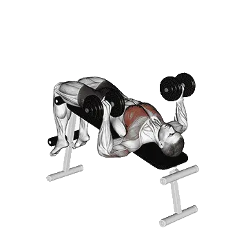

Decline dumbbell bench press
Decline dumbbell bench press menampilkan berat rata-rata dan standar kekuatan sebagai referensi untuk kategori dada. Otot utama: Pectoralis bawah, Triseps brachii, Biseps brachii.

Berat rata-rata: Menengah
Acuan untuk level menengah.
Pria
38 kg
Wanita
21 kg
Berat rata-rata Decline dumbbell bench press [1RM]
| Level | ||
|---|---|---|
| Dasar | 13 kg | 5 kg |
| Pemula | 23 kg | 11 kg |
| Menengah | 38 kg | 21 kg |
| Mahir | 55 kg | 34 kg |
| Pro | 75 kg | 49 kg |
Catatan: standar ini adalah estimasi 1RM berdasarkan lifter rata-rata. Berat badan, usia, dan faktor pribadi lain dapat memengaruhi hasil. Lihat data detail pada tabel di bawah.
Standar kekuatan Decline dumbbell bench press (kg)
Pria berdasarkan berat badan (kg) [1RM]
| Berat badan | Dasar | Pemula | Menengah | Mahir | Pro |
|---|---|---|---|---|---|
| 50 | 7 | 14 | 25 | 39 | 55 |
| 55 | 8 | 16 | 27 | 42 | 58 |
| 60 | 9 | 18 | 30 | 45 | 62 |
| 65 | 11 | 20 | 32 | 48 | 65 |
| 70 | 12 | 22 | 35 | 51 | 69 |
| 75 | 13 | 23 | 37 | 53 | 72 |
| 80 | 15 | 25 | 39 | 56 | 75 |
| 85 | 16 | 27 | 41 | 58 | 77 |
| 90 | 17 | 28 | 43 | 60 | 80 |
| 95 | 18 | 30 | 45 | 63 | 83 |
| 100 | 20 | 31 | 47 | 65 | 85 |
| 105 | 21 | 33 | 48 | 67 | 88 |
| 110 | 22 | 34 | 50 | 69 | 90 |
| 115 | 23 | 36 | 52 | 71 | 92 |
| 120 | 24 | 37 | 53 | 73 | 94 |
| 125 | 25 | 38 | 55 | 75 | 96 |
| 130 | 26 | 40 | 57 | 77 | 98 |
| 135 | 27 | 41 | 58 | 78 | 100 |
| 140 | 28 | 42 | 60 | 80 | 102 |
Pria berdasarkan usia [1RM]
| Usia | Dasar | Pemula | Menengah | Mahir | Pro |
|---|---|---|---|---|---|
| 15 | 11 | 20 | 32 | 47 | 64 |
| 20 | 13 | 23 | 37 | 54 | 73 |
| 25 | 13 | 23 | 38 | 55 | 75 |
| 30 | 13 | 23 | 38 | 55 | 75 |
| 35 | 13 | 23 | 38 | 55 | 75 |
| 40 | 13 | 23 | 38 | 55 | 75 |
| 45 | 12 | 22 | 36 | 52 | 71 |
| 50 | 12 | 21 | 34 | 49 | 67 |
| 55 | 11 | 19 | 31 | 45 | 62 |
| 60 | 10 | 18 | 28 | 42 | 56 |
| 65 | 9 | 16 | 26 | 38 | 51 |
| 70 | 8 | 14 | 23 | 34 | 46 |
| 75 | 7 | 13 | 21 | 30 | 41 |
| 80 | 6 | 11 | 18 | 27 | 37 |
| 85 | 6 | 10 | 16 | 24 | 33 |
| 90 | 5 | 9 | 15 | 22 | 30 |
Wanita berdasarkan berat badan (kg) [1RM]
| Berat badan | Dasar | Pemula | Menengah | Mahir | Pro |
|---|---|---|---|---|---|
| 40 | 2 | 7 | 15 | 26 | 38 |
| 45 | 3 | 8 | 16 | 28 | 41 |
| 50 | 4 | 9 | 18 | 29 | 43 |
| 55 | 4 | 10 | 19 | 31 | 45 |
| 60 | 5 | 11 | 20 | 32 | 47 |
| 65 | 5 | 12 | 21 | 34 | 49 |
| 70 | 6 | 13 | 23 | 35 | 50 |
| 75 | 6 | 13 | 24 | 37 | 52 |
| 80 | 7 | 14 | 25 | 38 | 53 |
| 85 | 7 | 15 | 26 | 39 | 55 |
| 90 | 8 | 16 | 26 | 40 | 56 |
| 95 | 8 | 16 | 27 | 41 | 57 |
| 100 | 9 | 17 | 28 | 42 | 58 |
| 105 | 9 | 18 | 29 | 43 | 60 |
| 110 | 10 | 18 | 30 | 44 | 61 |
| 115 | 10 | 19 | 31 | 45 | 62 |
| 120 | 11 | 19 | 31 | 46 | 63 |
Wanita berdasarkan usia [1RM]
| Usia | Dasar | Pemula | Menengah | Mahir | Pro |
|---|---|---|---|---|---|
| 15 | 4 | 10 | 18 | 29 | 42 |
| 20 | 5 | 11 | 21 | 33 | 48 |
| 25 | 5 | 11 | 21 | 34 | 49 |
| 30 | 5 | 11 | 21 | 34 | 49 |
| 35 | 5 | 11 | 21 | 34 | 49 |
| 40 | 5 | 11 | 21 | 34 | 49 |
| 45 | 5 | 11 | 20 | 32 | 47 |
| 50 | 4 | 10 | 19 | 30 | 44 |
| 55 | 4 | 9 | 18 | 28 | 41 |
| 60 | 4 | 9 | 16 | 26 | 37 |
| 65 | 3 | 8 | 14 | 23 | 33 |
| 70 | 3 | 7 | 13 | 21 | 30 |
| 75 | 3 | 6 | 12 | 19 | 27 |
| 80 | 2 | 6 | 10 | 17 | 24 |
| 85 | 2 | 5 | 9 | 15 | 22 |
| 90 | 2 | 5 | 8 | 13 | 19 |
Catatan: berat dumbbell pada tabel dihitung untuk satu dumbbell.
Catat dan analisis di aplikasi Shiba
Lihat beban, repetisi, dan perkembangan di satu tempat.
Cara membaca tabel
| Level | Deskripsi | Distribusi |
|---|---|---|
| Dasar | Menguasai teknik yang benar dan berlatih konsisten minimal 1 bulan. | Bawah 5% |
| Pemula | Berlatih konsisten minimal 6 bulan. | Atas 80% |
| Menengah | Berlatih konsisten lebih dari 2 tahun. | Atas 50% |
| Mahir | Berlatih terencana lebih dari 5 tahun. | Atas 20% |
| Pro | Menekuni latihan ini secara khusus lebih dari 5 tahun. | Atas 5% |
Latihan lainnya
Dada
Paused bench press
Dada
One-arm push-up
Dada / Bodyweight
Reverse-grip bench press
Dada
Diamond push-up
Dada / Bodyweight
Close-grip dumbbell bench press
Dada / Dumbbell
Bench pin press
Dada
Wide-grip bench press
Dada
Decline push-up
Dada / Bodyweight
Close-grip incline bench press
Dada
Incline push-up
Dada / Bodyweight
Close-grip push-up
Dada / Bodyweight
Archer push-up
Dada / Bodyweight